▼ 社会现象
2005 -批判社会现象-养老
Part B
Write an essay of 160–200 words based on the following drawing. In your essay, you should first describe the drawing, then interpret its meaning, and give your comment on it.
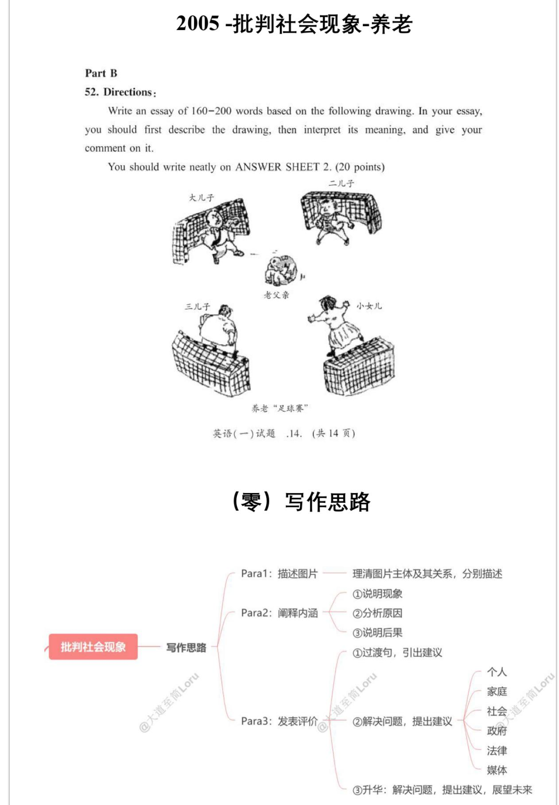
(零) 写作思路
| 思路2范文(177词):Para 1:1As can be seen from the picture, the old man in the middle looks helpless as he is being kicked around by his sons and daughters, who seem indifferent to his needs and unwilling to take responsibility. 2Below the picture, there is a caption which reads: “Elderly Care Football Match”.Para 2:1This picture reflects the sad reality that elderly parents are treated as burdens rather than loved and respected family members by their children. 2As a result, unfortunately, old people who have already been a marginal group in our society have to face the risk of being neglected or even abandoned by their children. 3What a tragedy!Para 3:1While the trend of neglecting elderly parents seems prevalent today, it goes against the traditional values of filial piety that have been deeply rooted in Chinese culture for centuries. 2Society and families must work together to restore these traditional virtues, encouraging care and respect for aging parents. 3Passing down these cultural values not only benefits the elderly but also strengthens family bonds and enriches society as a whole.范文译文:第一段:1正如图中所示,中间的老人看起来无助,因为他正在被他的儿女们踢来踢去,他们似乎对老人的需求漠不关心,也不愿意承担责任。2图片下方有一个标题写着:“赡养老人足球赛”。 |
| 第二段:1这幅图反映了一个令人悲伤的现实,即老年父母被他们的孩子视为负担,而不是被爱和尊重的家庭成员。2因此,不幸的是,已经成为社会边缘群体的老人不得不面对被忽视甚至被孩子遗弃的风险。3多么悲哀的现实啊!第三段:1虽然忽视老年父母的趋势在今天似乎很普遍,但这违背了几世纪以来深深植根于中国文化中的孝道传统。2社会和家庭必须共同努力,恢复这些传统美德,鼓励关心和尊重年迈的父母。3传承这些文化价值不仅对老年人有益,而且还能加强家庭纽带,丰富整个社会。 |
2021 -个人品质
Part B 52. Directions: Write an essay of 160–200 words based on the following picture. In your essay, you should 1) describe the picture briefly, 2) interpret its intended meaning, and 3) give your comments. You should write neatly on the ANSWER SHEET. (20 points)
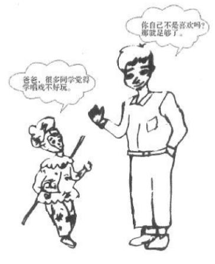
（零）写作思路
1、个人品质（有倾向）
Para1: 描述图片
①概述应该如何做
Para2: 阐释内涵
②积极影响1
③积极影响2
④举例论证
Para3：发表评价 —— 总结正确做法
2、个人品质（有其他因素）
Para1: 描述图片
①概述应该如何做
Para2: 阐释内涵
②让步肯定其他因素
③转折明确观点
④举例论证
Para3: 发表评价 —— 总结正确做法
2022 -个人品质
Part B 52. Directions: Write an essay of 160-200 words based on the picture below. In your essay, you should 1) describe the picture briefly, 2) explain its intended meaning, and 3) give your comments. You should write neatly on the ANSWER SHEET. (20 points)
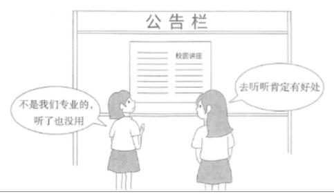
（零）写作思路
1、个人品质（有对比）
Para1: 描述图片
①概述图片
Para2: 阐释内涵
②说明主体1行为及消极影响
③说明主体2行为及积极影响
Para3：发表评价 —— 总结优秀品质
2、个人品质（有倾向）
Para1: 描述图片
①概述应该如何做
Para2: 阐释内涵
②积极影响1
③积极影响2
④举例论证
Para3：发表评价 —— 总结正确做法
思路1范文：196词
Para1: ①As shown in the picture, two girls are standing in front of a bulletin board. ②One of the girls, glancing at the announcement, says casually, “It’s not related to our major, so there’s no point in attending.” ③Meanwhile, the other girl turns to her friend and replies optimistically, “There must be some benefits we can gain from it.”
Para2: ①The different perspectives depicted in the pictures stem from varying perceptions of the value of interdisciplinary learning. ②The girl on the left appears hesitant and skeptical about exploring subjects beyond her major, which may lead to a limited understanding of diverse perspectives and hinder her ability to think critically. ③In contrast, the girl on the right recognizes the importance of broadening her horizons, understanding that knowledge from various disciplines can not only enhance personal and academic growth but also equip her with a diverse skill set essential for adapting to the increasingly competitive and ever-changing job market.
Para3: ①In sum, all-around self-improvement requires us to proactively break down the barriers between our chosen field of study. ②To put it in a nutshell, we should place weight on the breadth as well as depth of knowledge.
范文译文：
第一段：①如图所示，两位女孩站在公告栏前。②其中一位女孩看着公告，随意地说道：“这与我们的专业无关，所以参加没有意义。”③与此同时，另一位女孩转向她的朋友，乐观地回答：“我们一定可以从中获得一些好处。”
第二段：①图片中展现的不同观点源于对跨学科学习价值的不同看法。②左边的女孩对探索自己专业以外的学科显得犹豫和怀疑，这可能导致她对不同观点的理解受限，并影响她的批判性思维能力。③相比之下，右边的女孩认识到拓宽视野的重要性，明白来自不同学科的知识不仅能促进个人和学术成长，还能使她具备多样化的技能，以适应日益竞争激烈和不断变化的就业市场。
第三段：①总之，全方位的自我提升要求我们主动打破所选学科之间的壁垒。②简而言之，我们应该重视知识的广度和深度。
▼ 社会现象
2015 - 社会现象-科技
Part B
- Directions:
Write an essay of 160-200 words based on the following picture. In your essay, you should 1) describe the picture briefly,
interpret its intended meaning, and
give your comments.
You should write neatly on ANSWER SHEET. (20 points)
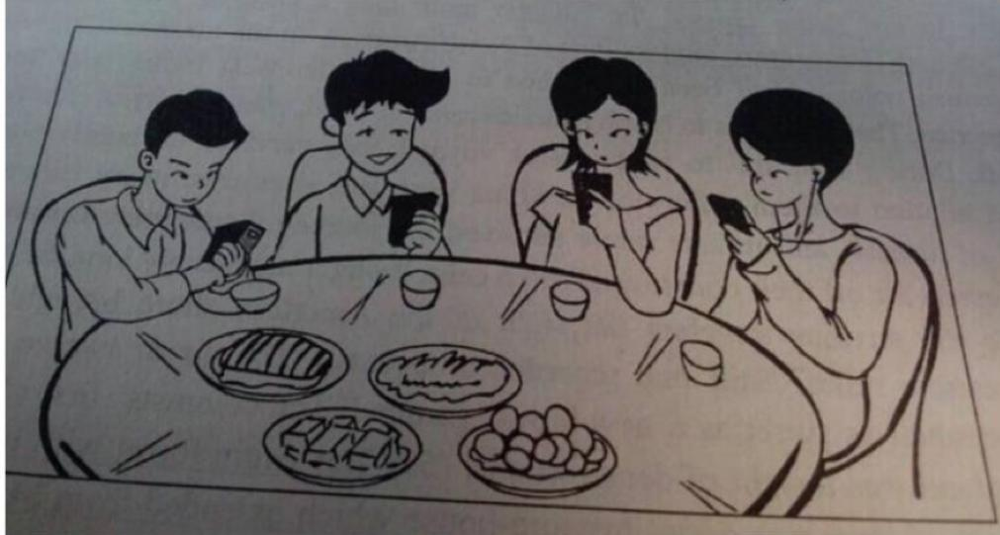
（零）写作思路
Para1: 描述图片
①过渡句，说明科技有利有弊
②让步：说明科技积极影响
Para2: 阐释内涵
1、社交疏离
2、心理健康
③转折：说明科技消极影响
3、身体健康
4、学习能力
5、独立自主
Para3: 发表评价 —— 正确对待科技/应对措施
Para 1: ①The picture above presents a thought-provoking scene, where four friends are seated around a dining table with various dishes in front of them, but each individual is absorbed in their own smartphones, paying no attention to the food or to each other.
Para 2: ①The image clearly illustrates how the Internet has transformed the way we communicate and interact with one another, bringing both benefits and challenges to our daily lives. ②Undoubtedly, the Internet has greatly improved efficiency in both personal and professional interactions, making it easier to stay connected with friends, access valuable information, and work remotely from anywhere. ③However, despite these advantages, excessive reliance on the Internet can lead to social isolation. ④Instead of fostering deeper, face-to-face interactions, people may find themselves increasingly disconnected from the real world, preferring virtual interactions over meaningful personal connections.
Para 3: ①To effectively address these challenges, it’s important to create a balance between our online presence and offline interactions. ②This can be achieved by setting boundaries on screen time, prioritizing face-to-face communication, and participating in community or social activities. ③By setting aside time for real-life connections, we can ensure that the digital world doesn’t overshadow our personal lives.
范文译文：
第一段：①上面的图片展示了一个引人深思的场景，四位朋友围坐在餐桌前，桌上摆满了各种菜肴。②然而，每个人都专注于自己的智能手机，对食物或彼此都不予理会。
第二段：①这幅图清楚地展示了互联网如何改变了我们交流和互动的方式，给我们的日常生活带来了好处和挑战。②互联网极大地提高了个人和工作互动的效率，使得人们更容易与朋友保持联系，获取有价值的信息，并且可以在任何地方远程工作。③然而，尽管互联网有这些优势，过度依赖它可能导致社会隔离。④人们可能会发现自己越来越脱离现实世界，倾向于虚拟互动，而不是追求有意义的面对面交流。
第三段：①为了有效应对这些挑战，在线上参与和线下互动之间创造平衡非常重要。②这可以通过设定屏幕时间的界限、优先进行面对面的交流以及参与社区或社交活动来实现。③通过为现实生活中的交流预留时间，我们可以确保数字世界不会掩盖我们个人生活。
社会现象积极
2024-社会现象-积极
PartB
52.Directions:
Write an essay based on the picture and the chart below. In your essay, you should
- describe the picture and the chart briefly,
2)interpret the implied meaning,and
- give your comments.
Write your answer in 160-200 words on the ANSWER SHEET.(20 points)
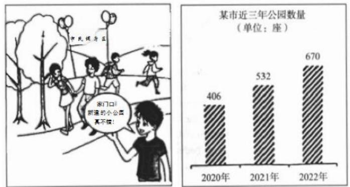
（零）写作思路
Para1：描述图片 —— 理清图片主体及其关系，分别描述
①概述图片
②分析原因
Para2: 阐释内涵
③概述积极影响
④对个人积极影响
⑤对社会积极影响
⑥呼应图表
Para3: 发表评价
①总结意义
②提出呼吁
范文2（215词）
Para1: ①The image on the left illustrates a vibrant scene at a public park, where individuals of various ages are actively engaging in sports and leisure activities. ②Excited by the lively atmosphere, a young boy cheerfully comments, “It is wonderful to have such a newly-built park near home.” ③Furthermore, the bar chart on the right illustrates an upward trend in the number of parks in a certain city over the past three years, from 406 in 2020 to 670 in 2022.
Para2: ①This picture vividly reflects a positive trend of growing enthusiasm for outdoor recreational activities in public parks. ②This trend can largely be attributed to the government’s increased investment in public facilities, thereby making parks more accessible. ③As an essential part of urban infrastructure, these parks provide urban residents with more opportunities to connect with nature and engage in outdoor activities, thereby improving their overall well-being and strengthening community connections. ④The positive impacts have been widely acknowledged, evidenced by the steady increase in the number of parks across the city, as shown in the chart on the right.
Para3: ①Overall, parks are crucial for improving quality of life in many ways. ②In addition to building new parks, efforts should also be put into maintaining existing ones, including green spaces, walking trails, and leisure facilities.
范文翻译：
第一段：①左侧的图片展示了公园里的一幅生动场景，不同年龄段的人们正在积极参与体育和休闲活动。②被热闹的氛围所感染，一个小男孩高兴地说道：“家附近有这样一个新建的公园真是太棒了。”③此外，右侧的柱状图展示了某城市在过去三年中公园数量的增长趋势，从2020年的406个增加到2022年的670个。
第二段：①这幅图生动地反映了人们对公园户外活动日益高涨的热情。②这一趋势主要归因于政府对公共设施的增加投资，从而使公园变得更加易于到达。③作为城市基础设施的重要组成部分，这些公园为城市居民提供了更多与大自然接触和参与户外活动的机会，从而提升了他们的整体健康水平并加强了社区联系。④正如右侧图表所示，这些积极影响已经得到了广泛认可，城市中公园的数量稳步增加便是一个有力的证据。第三段：①总的来说，公园在多方面对提高生活质量至关重要。②除了建设新的公园外，还应努力维护现有的公园，包括绿地、步道和休闲设施。
社会现象积极
2023 - 社会现象-积极
Part B
52. Directions:
Write an essay based on the picture below. In your essay, you should
describe the picture briefly,
interpret the implied meaning, and
give your comments.
Write your answer in 160-200 words on the ANSWER SHEET. (20 points)
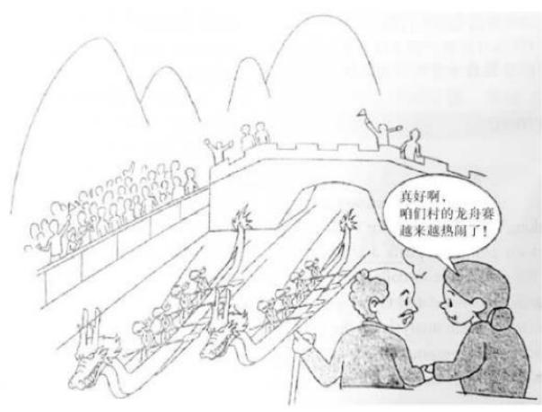
（零）写作思路
Para1：描述图片 —— 理清图片主体及其关系，分别描述
①概述图片
②分析原因
Para2: 阐释内涵
③概述积极影响
④对个人积极影响
⑤对社会积极影响
⑥举例子论证积极影响
①总结意义
Para3: 发表评价
②提出呼吁
Para1: ①As shown in the picture, a dragon boat race is taking place on a river, with several boats paddling vigorously. ②The audience is watching enthusiastically from the banks, cheering for the participants. ③Excited by the lively atmosphere, an elderly lady says to her spouse, “It is truly fantastic that the dragon boat races in our village are increasingly popular and lively!”
Para2: ①The picture demonstrates the public’s great interest in traditional Chinese culture and customs. ②Such activities not only bring significant benefits to each citizen but also contribute to the betterment of society. ③To be more specific, it goes a long way toward helping every citizen experience personal satisfaction and fostering a stronger connection to their history and traditions. ④In the meantime, through a collective embrace of this trend, our society as a whole will witness greater mutual understanding and cultural appreciation among its citizens. ⑤For instance, during national holidays, local governments organize temple fairs, lantern festivals, and cultural exhibitions to celebrate traditional customs, drawing large crowds and fostering community pride and cohesion.
Para3: ①In conclusion, those who pioneered the trend of reintroducing and celebrating traditional cultural practices in modern society deserve praise. ②Nevertheless, it is imperative to acknowledge that there is still significant room for improvement and further actions. ③We must continue to make concerted efforts to preserve Chinese culture and contribute to the development of our hometowns.
第一段：①如图所示，一场龙舟比赛正在河上进行，几艘船正奋力划行。②岸上的观众兴致勃勃地观看比赛，为选手们加油助威。③在热闹的氛围中，一位老太太对她的丈夫说道：“我们村的龙舟赛越来越受欢迎，真是太好了！”
第二段：①这幅图展示了公众对中国传统文化和习俗的浓厚兴趣。②这样的活动不仅为每个公民带来显著的益处，还促进了社会的进步与改善。③更具体地说，这有助于每位公民获得个人满足感，并加深他们与历史和传统的联系。④与此同时，通过共同接受这一趋势，我们的社会整体将见证公民之间更深的相互理解和文化认同。⑤例如，在国家节日期间，地方政府组织庙会、灯会和文化展览等活动来庆祝传统习俗，吸引大批民众参与，增强社区的自豪感和凝聚力。
第三段：①总之，那些在现代社会中重新引入并推广传统文化习俗的人值得称赞。②尽管如此，我们必须承认，仍有很大的改进空间，且需要进一步采取行动。③我们必须继续共同努力，保护中华文化，并为家乡的发展做出贡献。
2011 - 社会现象-消极
Part B
Write an essay of 160-200 words based on the following drawing. In your essay, you should
explain its intended meaning, and
give your comments. You should write neatly on ANSWER SHEET 2. (20 points)
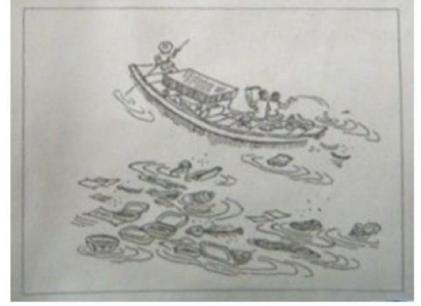
旅程之“余”
（零）写作思路
Para1: 描述图片
理清图片主体及其关系，分别描述
①说明现象 —— 过渡句
1、缺乏意识
2、个人主义
Para2: 阐释内涵
②分析原因
3、教育缺失
4、监管机制不全
1、经济损失
③说明后果
2、社会风气
3、影响后代
①过渡句，引出建议
1、个人：提高意识
2、家庭学校：加强教育
Para3：发表评价
②解决问题，提出建议
3、政府：加强监管，财政支持
4、法律：加强立法
5、媒体：加强宣传
③升华：解决问题，提出建议，展望未来
范文1（225词）
Para1: ①As shown in the picture, a river in a scenic area is littered with garbage. ②Where did all the trash come from? ③At the top of the image, a small boat can be seen, with one of the tourists at the bow casually throwing garbage into the water. ④Neither his companion nor the boatman seems to care, both completely indifferent to his actions. ⑤The caption below reads, “What is left after the trip.”
Para2: ①Obviously, this picture is a sharp criticism of tourists’ uncivilized behavior that causes damage to the environment. ②A major contributing factor is the growing emphasis on individualism in our society, which prioritizes immediate convenience over long-term environmental protection. ③As a result, polluting scenic areas can not only destroys natural beauty but also negatively impacts tourism, reducing both visitor numbers and local revenue.
Para3: ①Given the serious consequences of littering, it is imperative to take concrete steps to tackle this problem effectively. ②First and foremost, parents and schools should take the lead in instilling a strong sense of environmental responsibility in children from an early age. ③In addition, the government should establish a comprehensive oversight framework, coordinating efforts between local authorities and environmental agencies to guarantee that public areas are properly maintained. ④We can expect that with the combined efforts of the government and all sectors of society, the environment will be better protected, thereby enhancing social responsibility.
范文翻译：
第一段：①如图所示：风景区内的一条河流布满了垃圾。②这些垃圾是从哪里来的呢？③在图像的上方，可以看到一艘小船，一名坐在船头的游客正随意地将垃圾扔进水中。④他的同伴和船夫对此毫不在意，对他的行为完全漠不关心。⑤下面的图片说明写道：“旅行留下了什么。”
第二段：①很明显，这幅图是对游客破坏环境的不文明行为的强烈批评。②一个主要的促成因素是社会中日益强调个人主义，它将即时便利置于长期环境保护之上。③结果，污染景区不仅会破坏自然美景，还会对旅游业产生负面影响，导致游客数量和当地收入减少。
第三段：①鉴于乱扔垃圾的严重后果，有必要采取切实措施有效应对这一问题。②首先，家长和学校应当率先引导孩子从小树立强烈的环保责任感。③此外，政府应该建立一个全面的监管框架，协调地方政府与环保机构的合作，确保公共区域得到适当维护。④我们可以预期，随着政府和社会各界的共同努力，环境将得到更好地保护，社会责任心也将因此得到提升。
社会现象
2009 -科技-网络的远与近
Part B
- Directions:
Write an essay of 160–200 words based on the following drawing. In your essay, you should
describe the drawing briefly,
explain its intended meaning, and then
give your comments.
You should write neatly on ANSWER SHEET 2. (20 points)
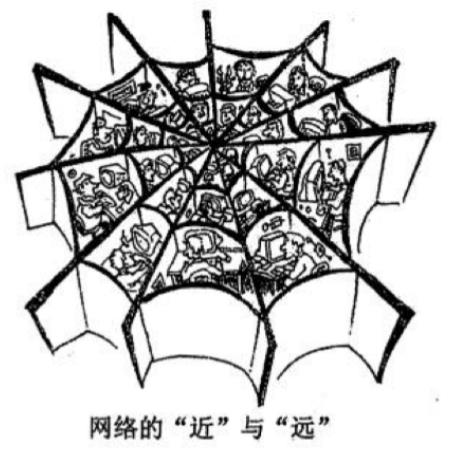
(零) 写作思路
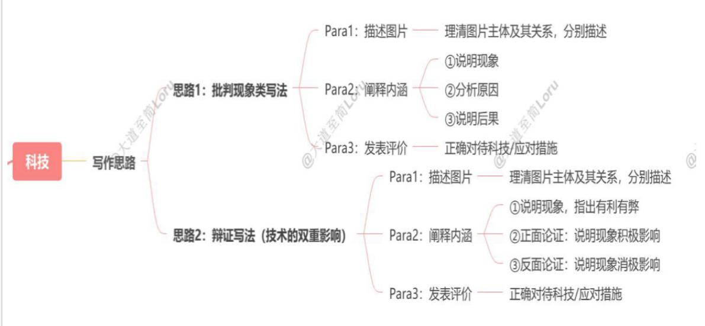
| 思路1范文(180词):Para 1:1As vividly depicted in the drawing, numerous individuals are sitting within a large spider web, each of them absorbed in their own tasks, either for work or entertainment.2While connected through this web, they remain isolated from each other.3The spider web clearly symbolizes the Internet, which simultaneously brings people closer and distances them.Para 2:1The image clearly illustrates how the Internet has transformed the way we communicate and interact with one another, bringing both benefits and challenges to our daily lives.2The Internet has greatly improved efficiency in both personal and professional interactions, making it easier to stay connected with friends, access valuable information, and work remotely from anywhere.3However, despite these advantages, excessive reliance on the Internet can lead to social isolation.4Instead of fostering deeper, face-to-face interactions, people may find themselves increasingly disconnected from the real world, preferring virtual interactions over meaningful personal connections.Para 3:1To address these challenges, it is crucial to maintain a balance between online and offline interactions.2We should make time for personal connections, ensuring that the virtual world does not overshadow the real one.范文译文:第一段:1如图所示,许多人正坐在一个巨大的蜘蛛网上,他们每个人都专注于自己的事情,无论是工作还是娱乐。2尽管他们通过这个网络连接在一起,但彼此仍然孤立。3这个蜘蛛网显然象征着互联网,既拉近了人们的距离,又使他们远 |
| 离彼此。第二段:1这幅图清楚地展示了互联网如何改变了我们交流和互动的方式,给我们的日常生活带来了好处和挑战。2互联网极大地提高了个人和工作互动的效率,使得人们更容易与朋友保持联系,获取有价值的信息,并且可以在任何地方远程工作。3然而,尽管互联网有这些优势,过度依赖它可能导致社会隔离。4人们可能会发现自己越来越脱离现实世界,倾向于虚拟互动,而不是追求有意义的面对面交流。第三段:1为了应对这些挑战,保持线上与线下互动之间的平衡至关重要。2我们应该为个人交流留出时间,确保虚拟世界不会掩盖现实世界的存在。 |
社会现象
2006 -批判社会现象-盲目追星-双图
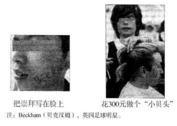
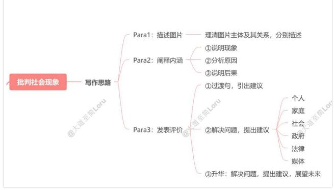
思路1范文（179词）：Para1:①The two images above reflect the phenomenon of idol worship among young people. ②The first picture shows a young person with the word “worship” written on his face, and the second image depicts someone in a barbershop spending 300 RMB to get a hairstyle like David Beckham’s.
Para 2:
①The pictures present a thought-provoking social phenomenon: the prevalence of idol worship and blind imitation of celebrities among young people. ②This issue largely stems from the impact of social media platforms, where young people are constantly exposed to glamorous images of celebrities, encouraging them to imitate.
Para 3:
①As we have seen, this trend has had concerning effects on young people’s development. ②Therefore, it is crucial to explore effective solutions. ③First, parents should play a key role in guiding their children towards healthy values, encouraging them to think critically rather than blindly following trends. ④Moreover, the media should take responsibility by providing more balanced reporting and highlighting positive role models beyond celebrities. ⑤These improvements will not only help young people establish healthy values but also bring more positive and constructive energy to our society.
范文译文：
第一段：
①上面的两幅图片反映了年轻人崇拜偶像的现象。②第一幅图显示了一位年轻人，他的脸上写着“崇拜”这个词，而第二幅图描绘了一个人在理发店花费300元人民币剪了一个像大卫·贝克汉姆的发型。
第二段：
①这些图片展示了一个发人深省的社会现象：即在年轻人中，崇拜偶像和盲目模仿名人十分普遍。②这一问题主要源于社交媒体平台的影响，年轻人不断接触到名人的华丽形象，这鼓励了他们的模仿行为。
第三段：
①正如我们所看到的，这一趋势对年轻人的发展产生了令人担忧的影响。②因此，探索有效的解决方案至关重要。③首先，父母应在引导孩子树立健康价值观方面发挥关键作用，鼓励他们批判性思考，而不是盲目跟随潮流。④此外，媒体也应承担起责任，通过提供更平衡的报道，突出超越名人的正面榜样。⑤这些改进不仅能帮助年轻人建立健康的价值观，还能为社会带来更多积极和建设性的能量。